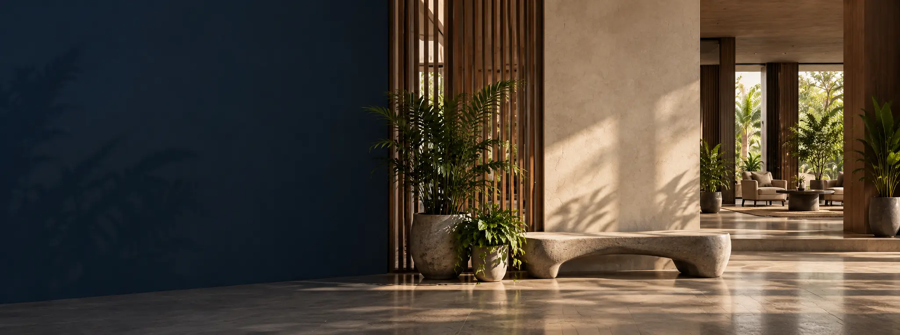

Serving Sri Lanka’s interior designers since 1984.
SLIID is the professional body representing, connecting and supporting interior designers across Sri Lanka.
The national professional body for interior designers.
The Sri Lanka Institute of Interior Designers (SLIID) began in 1984 as the Association of Interior Designers. It was incorporated by Act of Parliament No. 2 of 1998.
Under the Act, SLIID promotes professional recognition, standards and education, and represents the interests of interior designers in Sri Lanka.
Governance and leadership →A journey of progress.
SLIID grew from a professional association into the Institute incorporated by Parliament. Its work continues through member service, education, professional practice and industry engagement.
The Association of Interior Designers was formed.
Parliament incorporated the Association as the Sri Lanka Institute of Interior Designers.
A new Executive Council was elected at the Special General Meeting on 19 September.
Upholding ethical practice.
Working together across the industry.
Embracing new ideas.
Striving for higher standards.
Designing with care for people and the environment.